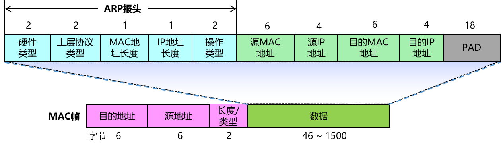
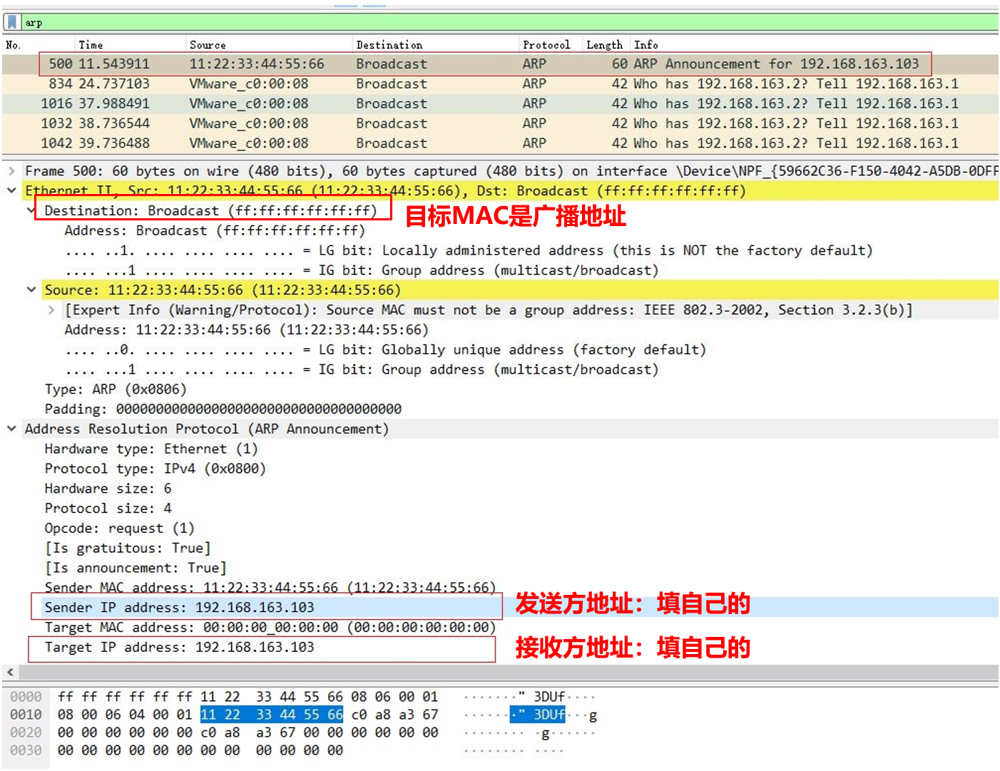
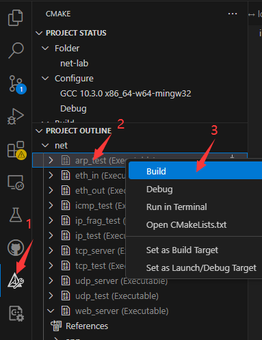
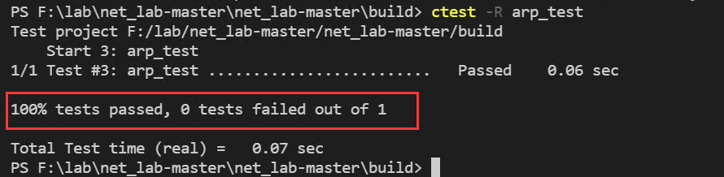

1. 实验目的
熟悉ARP数据包格式，掌握ARP映射表的建立与更新过程。
掌握ARP数据包的的发送和接收处理过程。
2. 实验任务
在完成协议栈之eth协议的基础上，编写ARP报文的接收、发送和请求报文函数，使其能够发送和接收ARP数据报文，并且能通过实验评测系统的测试。
重要
常见坑点预警
收到 ARP Request 或 ARP Response 后，都要及时更新 ARP 表；否则后续会出现“ARP 一直广播、业务包发不出去”的现象。
向异网主机发包时，ARP 查询对象是下一跳网关，不是最终目的主机。
如果 Wireshark 里 ARP 应答已经回来，但程序仍不停发 ARP Request，请优先检查映射表写入时机和 key / value 是否正确。
详细排查路径可参考 典型 Bug 排查手册 中“ARP 表未更新导致反复广播”。
3. 实验原理
3.1. ARP协议概要
在TCP/IP的网络构造和网络通信中，无需事先知道MAC地址究竟是什么，只要确定了IP地址，就可向这个目标地址发送IP数据报了。然而，在数据链路层使用的是硬件地址（MAC）进行报文传输，IP地址不能被物理网络所识别，因此必须建立IP地址和MAC地址的映射关系，这一过程由 ARP（Address Resolution Protocol，地址解析协议）来完成。
ARP 协议以目标 IP 地址为线索，用于定位下一个应该接收数据包的网络设备对应的 MAC 地址。若目标主机不在同一链路上，可通过 ARP 查找下一跳网关的 MAC 地址。需要注意的是，ARP 仅适用于 IPv4 网络，不能用于 IPv6 网络。在 IPv6 网络中，可使用 ICMPv6 替代 ARP 发送邻居探索消息。
3.2. ARP的工作机制
那么ARP又是如何知道MAC地址的呢？简单来说，ARP 通过 ARP 请求和 ARP 响应两种类型的数据包来确定 MAC 地址。此外，每台使用 ARP 的主机都会保留一个专用的内存区域（即缓存），用于存放最近的 IP 地址与硬件地址的对应关系。当主机收到 ARP 应答后，会将获得的 IP 地址和硬件地址的对应关系存入缓存。发送报文时，主机会先在缓存中查找相应的映射项，若找到则直接发送报文；若未找到，则利用 ARP 进行地址解析。ARP 缓存信息在一定时间内有效，过期且未更新的缓存项将被删除。
3.2.1. 同一网段的ARP解析过程
如下图所示，当主机 A 需要向主机 B 发送报文，且在缓存中未找到相应记录时，就必须先解析主机 B 的硬件地址。主机 A 会在网段内广播 ARP 请求报文，由于广播包能被同一链路上的所有主机和路由器接收，因此该 ARP 请求包会被它们进行解析。主机 B 收到请求报文后，会判断报文的目的 IP 是否为本机的 IP 地址，若是，则将本机的硬件地址写入应答报文并发送给主机 A。主机 A 收到应答后将其存入缓存，解析成功，随后将报文发往主机 B。

3.2.2. 不同网段的ARP解析过程
如下图所示，当主机 A 要向主机 C 发送报文时，主机 A 首先会分析目的地址是否在同一网段。若不在同一网段，主机 A 需要将报文先发送给其默认网关，再由默认网关进行转发。若主机 A 未找到默认网关的硬件地址，会发送 ARP 请求报文来请求默认网关的硬件地址。默认网关收到请求后，会将自己的硬件地址写入应答报文并发送给主机 A。之后，主机 A 到主机 C 的报文会先被送到默认网关，默认网关再根据报文的目的 IP 地址进行转发，直至报文送达主机 C。主机 C 到主机 A 的报文则以相反的顺序发送。

备注
默认网关
默认网关是一个网络设备（通常是路由器）的 IP 地址，它是本地网络与外部网络通信的出口。当主机需要与不在同一子网的其他主机进行通信时，就会将数据包发送给默认网关，由默认网关负责将数据包转发到目标网络。可以把默认网关想象成一个 “关卡”，本地网络中的主机要访问外部网络，都需要经过这个 “关卡”。例如，在家庭网络中，路由器通常就是默认网关，家里的电脑、手机等设备要访问互联网，就会把数据包先发送给路由器，再由路由器转发到互联网上。
注意
请思考，IP地址和MAC地址为什么缺一不可？
3.3. ARP协议报文格式
ARP 是一个独立的三层协议，因此 ARP 报文在向数据链路层传输时无需经过 IP 协议的封装，而是直接生成包含 ARP 报头的报文。到达数据链路层后，再由对应的数据链路层协议（如以太网协议）进行封装。ARP 报文分为 ARP 请求报文和 ARP 应答报文两种，其报文格式如下图所示。

ARP报文每个字段的含义如下表所示：
字段名称 |
长度 |
含义 |
|---|---|---|
硬件类型 |
2 字节 |
表示 ARP 报文可以在哪种类型的网络上传输，值为 1 时表示为以太网地址 |
上层协议类型 |
2 字节 |
表示硬件地址要映射的协议地址类型，映射 IP 地址时的值为 0x0800 |
MAC 地址长度 |
1 字节 |
标识 MAC 地址长度，以字节为单位，此处为 6 |
IP 协议地址长度 |
1 字节 |
标识 IP 地址长度，以字节为单位，此处为 4 |
操作类型 |
2 字节 |
指定本次 ARP 报文类型。1 标识 ARP 请求报文，2 标识 ARP 应答报文 |
源 MAC 地址 |
6 字节 |
标识发送设备的硬件地址 |
源 IP 地址 |
4 字节 |
标识发送方设备的 IP 地址 |
目的 MAC 地址 |
6 字节 |
表示接收方设备的硬件地址，在请求报文中该字段值全为 0（即 00-00-00-00-00-00），表示任意地址 |
目的 IP 地址 |
4 字节 |
表示接受方的 IP 地址 |
3.4. ARP表
无论是主机、交换机还是路由器，都会有一个用于缓存同一网段设备 IP 地址和 MAC 地址的 ARP 映射表，该表用于数据帧的转发。设备通过 ARP 解析到目的 MAC 地址后，会在自己的 ARP 映射表中添加 IP 地址到 MAC 地址的映射项，以便后续向同一目的地转发数据帧。ARP 表项分为动态 ARP 表项和静态 ARP 表项。在本实验中，我们需要实现 动态 ARP 表项。
动态 ARP 表项由 ARP 协议通过 ARP 报文自动生成和维护，这些表项可以老化、被新的 ARP 报文更新，也可能被静态 ARP 表项覆盖。当达到老化时间或接口关闭时，相应的动态 ARP 表项将被删除。
在本实验中，我们提供了支持超时时间的 map 键值对容器框架，以减轻同学们的部分工作量。在用于获取 map 中指定键的值的 map_set() 函数中，会调用 map_entry_valid() 函数判断该键值对是否有效，判断标准中包含是否超时的判断。
1 /**
2 * @brief 内部函数，判断键值对是否有效
3 *
4 * @param map 要判断的map
5 * @param entry 键值对指针
6 * @return int 1为合法，0为不合法
7 */
8 int map_entry_valid(map_t *map, const void *entry)
9 {
10 time_t entry_time = *(time_t *)((uint8_t *)entry + map->key_len + map->value_len);
11 return entry_time && (!map->timeout || entry_time + map->timeout >= time(NULL));
12 }
13
14 /**
15 * @brief 获取map中指定键的值
16 *
17 * @param map 要获取的map
18 * @param key 键指针
19 * @return void* 值指针，找不到为NULL
20 */
21 void *map_get(map_t *map, const void *key)
22 {
23 if (key == NULL)
24 return NULL;
25 for (size_t i = 0; i < map->max_size; i++)
26 {
27 uint8_t *entry = map_entry_get(map, i);
28 if (map_entry_valid(map, entry) && !memcmp(key, entry, map->key_len))
29 return entry + map->key_len;
30 }
31 return NULL;
32 }
4. 代码实现与检测
同学们需认真研读本实验所提供的代码框架，将 src/arp.c 文件中的 arp_req() 函数、arp_out() 函数、arp_in() 函数和 arp_resp() 函数补充完整。
4.1. ARP初始化
arp_init() 函数用于实现 ARP 初始化功能，具体初始化流程如下：
Step1. 初始化 ARP 表：
调用 map_init() 函数，对用于存储 IP 地址和 MAC 地址的 ARP 表 arp_table 进行初始化，并将超时时间设置为 ARP_TIMEOUT_SEC。
Step2. 初始化数据包缓存：
再次调用 map_init() 函数，初始化用于缓存来自 IP 层数据包的缓存区，并将超时时间设置为 ARP_MIN_INTERVAL。
Step3. 添加协议键值对：
调用 net_add_protocol() 函数，添加键值对，其中键为 NET_PROTOCOL_ARP，值为 arp_in。
Step4. 发送无回报 ARP 包：
在初始化阶段（系统启用网卡时），需要向网络发送无回报 ARP 包（ARP announcement），也就是广播包，以此告知网络中其他设备本机的 IP 地址和 MAC 地址。在实验代码中，通过调用 arp_req() 函数来发送该无回报 ARP 包。
提示
无回报ARP包（ARP announcement） ：是一种用于向局域网（LAN）宣告本机要使用某个 IP 地址的数据包，它是一个 Sender IP 和 Target IP 都填充为本机 IP 地址的 ARP request。
同学们需要自行实现arp_req()函数，其具体功能步骤如下：
Step1. 初始化缓冲区：
调用 buf_init() 函数对 txbuf 进行初始化。
Step2. 填写ARP报头:
按照 ARP 协议规范，准确填写 ARP 报头信息。
Step3. 设置操作类型：
将 ARP 操作类型设置为 ARP_REQUEST，同时要注意进行大小端转换。
Step4. 发送 ARP 报文：
调用 ethernet_out 函数将 ARP 报文发送出去。需要注意的是，ARP announcement 或 ARP 请求报文均为广播报文，其目标 MAC 地址应设置为广播地址：FF - FF - FF - FF - FF - FF。
ARP announcement 报文格式可参考下图：

4.2. ARP发送处理过程
同学们需要自行实现arp_out()函数，其具体功能步骤如下：
Step1. 查找 ARP 表：
调用 map_get() 函数，依据 IP 地址在 ARP 表（arp_table）中进行查找。
Step2. 找到对应 MAC 地址：
若能找到该 IP 地址对应的 MAC 地址，则将数据包直接发送给以太网层，即调用 ethernet_out 函数将数据包发出。
Step3. 未找到对应 MAC 地址：
若未找到对应的 MAC 地址，需进一步判断 arp_buf 中是否已经有包。若有包，说明正在等待该 IP 回应 ARP 请求，此时不能再发送 ARP 请求；若没有包，则调用 map_set() 函数将来自 IP 层的数据包缓存到 arp_buf 中，然后调用 arp_req() 函数，发送一个请求目标 IP 地址对应的 MAC 地址的 ARP request 报文。
注意
扩展功能：由于 map 数据结构存在一定限制，相同 IP 的 arp_buf 长度仍为 1，同学们可自行设计数据结构以实现不丢包的扩展功能。
4.3. ARP接收处理过程
同学们需要自行实现arp_in()函数，其具体功能步骤如下：
Step1. 检查数据长度：
首先判断数据长度，若数据长度小于 ARP 头部长度，则认为数据包不完整，将其丢弃，不予处理。
Step2. 报头检查：
对报头进行详细检查，查看报文是否完整。检测内容包括 ARP 报头的硬件类型、上层协议类型、MAC 硬件地址长度、IP 协议地址长度、操作类型，确保该报头符合协议规定。
Step3. 更新 ARP 表项：
调用 map_set() 函数更新 ARP 表项，使 ARP 表中的信息保持最新。
Step4. 查看缓存情况：
调用 map_get() 函数查看该接收报文的 IP 地址是否有对应的 arp_buf 缓存。
有缓存情况：若有缓存，说明 ARP 分组队列里面有待发送的数据包。即上一次调用 arp_out() 函数发送来自 IP 层的数据包时，由于没有找到对应的 MAC 地址而先发送了 ARP request 报文，此时收到了该 request 的应答报文。此时，将缓存的数据包 arp_buf 发送给以太网层，即调用 ethernet_out() 函数将其发出，接着调用 map_delete() 函数将这个缓存的数据包删除。
无缓存情况：若该接收报文的 IP 地址没有对应的 arp_buf 缓存，还需要判断接收到的报文是否为 ARP_REQUEST 请求报文，并且该请求报文的 target_ip 是本机的 IP。若是，则认为是请求本主机 MAC 地址的 ARP 请求报文，调用 arp_resp() 函数回应一个响应报文。
4.4. ARP响应包
同学们需要自行实现arp_resp()，功能如下：
Step1. 初始化缓冲区：
调用 buf_init() 函数初始化 txbuf。
Step2. 填写 ARP 报头首部：
按照 ARP 协议规范，准确填写 ARP 报头首部信息。
Step3. 发送 ARP 报文：
调用 ethernet_out() 函数将填充好的 ARP 报文发送出去。
4.5. 实验自测
ARP 自测步骤与 eth 自测步骤类似，具体如下：
点击CMake工具栏，找到arp_test[arp_test.exe]，右键，选择“生成”进行编译。


接着，打开VSCode的终端，到build目录下，输入ctest -R arp_test进行自测。
ARP协议自测，处理正确的结果显示如下图：

✅ 成功：终端显示 100% tests passed
❌ 失败：根据错误日志排查问题，可参考 Eth协议调试指南
警告
当前 arp_test 的自动 pcap 检查只核对输出报文的数量和长度，不会逐字节比较报文内容。因此，即使 ctest -R arp_test 显示 100% tests passed，或 ctest -R arp_test -V 显示 All packets are the same to the demo，也不能据此确认 out.pcap 与 demo_out.pcap 的内容完全一致。
完成自测后，仍应使用 Wireshark 分别打开 testing/data/arp_test/out.pcap 和 testing/data/arp_test/demo_out.pcap，按报文顺序核对以太网目的/源 MAC 地址、以太类型，以及 ARP 的硬件类型、协议类型、硬件/协议地址长度、操作码、发送端和目标端 MAC/IP 地址。Wireshark 用法可参考 附录 A：Wireshark 入门。
4.5.1. GDB调试
本实验支持使用GDB调试，请参考 Windows开发环境搭建 中的“Windows下编译和调试”